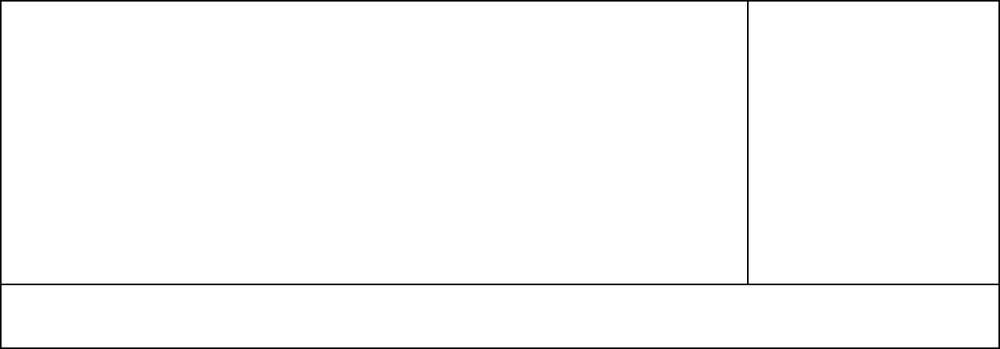
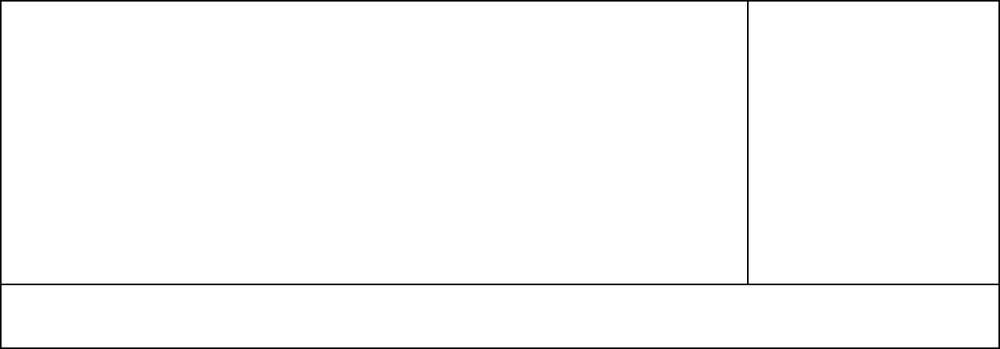

TOmato

TOmato
Solanales (가지목)
Solanum lycopersicum L.


 Click this!
여름, 가을7~9월 제철한해살이풀장과채소? 과일?건강식품
Click this!
여름, 가을7~9월 제철한해살이풀장과채소? 과일?건강식품
| Calories | 18 kcal | Carbs | 3.9 grams | |
| Water | 95% | Sugar | 2.6 grams | |
| Protein | 0.9 grams |
토마토는 가지목 가지과에 속하는 관속식물입니다. 토마토의 꽃은 5~6월에 피는데 마디 사이에 달리며, 노란색입니다. 열매는 장과 (漿果/살과 물이 많고 속에 씨가 여러 개 들어있는 열매.) 이며, 둥글고 지름 5~10cm, 7~8월에 붉은색으로 익습니다. 토마토는 밭에서 재배하는 한해살이풀로 우리말로 '일년감'이라고도 하고, 또는 '도마도, 땅감', 한자명으로는 '남만시'라고 불립니다. 우리나라에는 17세기 중국에서 도입되었으며, 1900년대 초부터 본격적으로 재배가 시작되었습니다. 남아메리카 페루 원산으로, 현재는 우리나라 전역 및 전 세계에서 토마토를 재배하고 있습니다.
많은 사람들이 토마토가 채소인지, 과일인지 헷갈리는 사람들이 많습니다. 결론부터 말하자면, 식물학적으로 토마토는 과일입니다. 과일은 기본적으로로 '식물의 꽃에서 발생하는 부분으로, 주로 씨앗을 포함함.'이라고 정의하고, 채소는 '식물의 뿌리, 줄기, 잎 또는 꽃 등을 포함함.'이라 정의합니다. 그래서, 노란 꽃에서 형성되어 많은 씨앗을 포함하고 있는 토마토는 식물학적으로는 과일이라고 할 수 있습니다. 1893년 미국 연방 대법원에서는 토마토가 저녁 식사에는 나오지만 후식으로는 나오지 않는다 하여 토마토를 채소로 판결한 사건이 있기도 하였습니다(닉스 대헤든(Nix v. Hedden)사건). 토마토 말고도 수박, 딸기 등이 과일이냐 아니냐에 대한 논쟁은 결국 국내 농업통계조사규칙에서 '과채류'라는 개념을 만들어냈습니다. 이는 '줄기에서 난 채소의 과실의 먹는 것을 목적으로 하는 식물'이라는 의미이며 이를 통해, 토마토는 채소인 동시에 과일이라고 볼 수 있습니다.
3의사들은 빨간 토마토를 싫어해!'토마토가 빨갛게 익을수록 의사들의 얼굴은 파랗게 질린다'는 말이 있을 정도로 토마토의 영양가는 매우 높습니다. 파란 토마토보다 빨간 것이 건강에 더 좋고, 열을 가하여 섭취하면 생으로 먹는 것 보다 흡수율이 5배 정도 늘어난다고 합니다. 토마토는 비타민이 풍부하여 피부에 좋고, 100g당 16~20kcal 정도로 낮아 다이어트에도 좋은 식품입니다. 토마토의 카로티노이드(carotenoid)성분은 항산화 효과(노화방지) 가 탁월하고, 카로티노이드 성분 중 붉은 색을 내는 리코펜(lycopene)성분이 폐암 발생률을 저하시키고, 아세트알데하이드(Acetaldehyde) 를 배출시켜 숙취해소에도 좋다고 합니다. 하지만 너무 많이 먹어도 좋을 건 없고, 토마토는 위산 분비를 촉진하기 때문에 역류성 식도염이나 위궤양을 앓고 있다면 가급적 섭취하지 않는 것이 좋습니다.
About vegetables
the facts about vegetables that we didn't know-!!!
20232504 서예린
yerino9o9seo@gmail.com